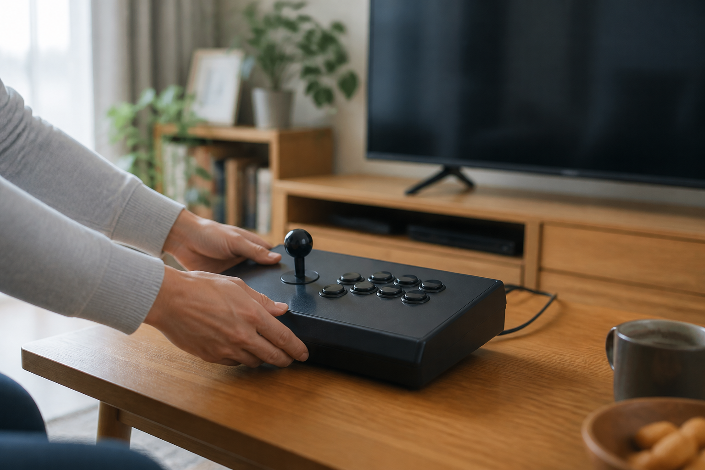
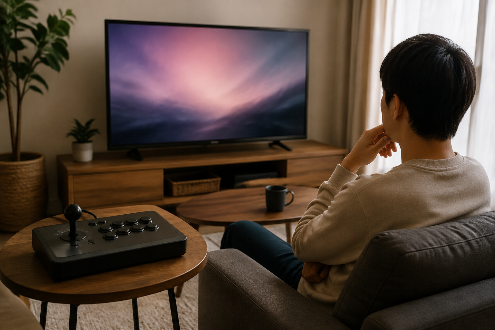
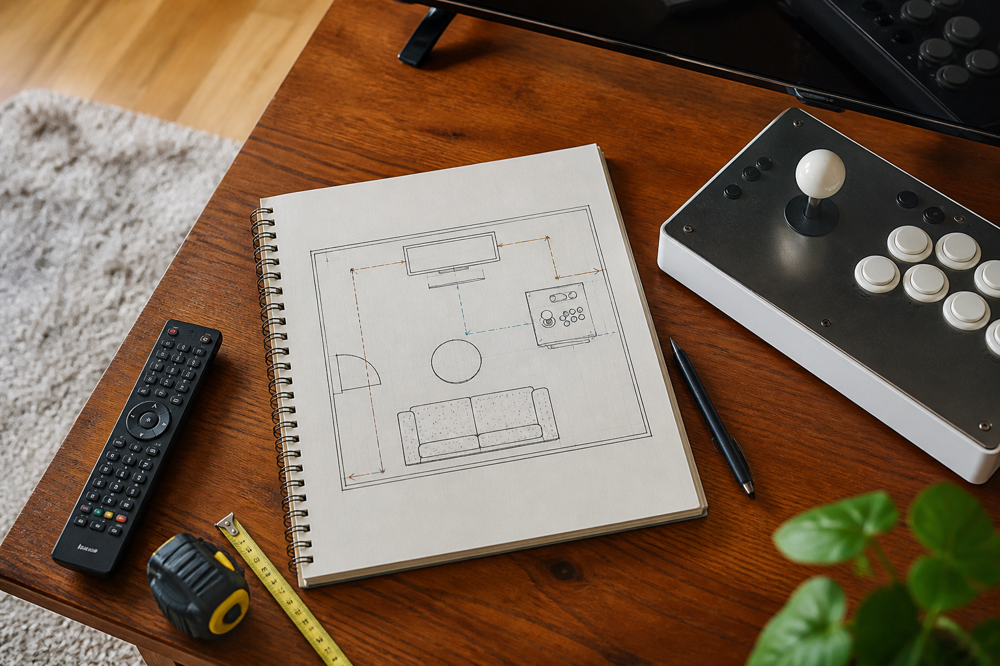

TV 연결형 분리기통은 이미 사용하는 TV를 화면으로 활용하고, 기기와 화면을 같은 자리에 두지 않고 싶은 사람에게 검토할 만한 형태입니다. 다만 TV 연결 방법과 포함 구성은 제품마다 다르므로, 구매 전에는 현재 판매 페이지의 안내를 기준으로 확인해야 합니다.

기존 TV를 화면으로 쓰고 싶은 경우
TV가 있는 거실이나 방에서 게임 화면을 따로 마련하지 않고 싶다면 TV 연결형을 비교해 볼 수 있습니다. 노리박스 제품 목록에는 ‘노리박스 분리형 레트로 가정용 오락실게임기 TV연결 휴대용’과 같이 TV 연결을 이름에 밝힌 제품이 있습니다. 제품명은 선택의 출발점일 뿐이므로, 실제 연결 방식과 필요한 환경은 해당 상품의 안내를 따로 확인하세요.
기존 TV를 활용하려면 제품별 연결 안내를 먼저 확인해야 합니다.

화면과 조작 위치를 나눠 생각하는 경우
화면을 보는 자리와 조작기를 둘 자리를 따로 정하고 싶을 때도 분리형 구성이 비교 기준이 될 수 있습니다. TV 앞의 동선, 소파나 의자에서 보는 위치, 조작할 때 팔을 둘 공간을 함께 살피면 내 집에서의 사용 장면을 그리기 쉽습니다. 노리박스 제품 목록에는 ‘노리박스 레볼루션 RV팩 128G 7078게임 TV연결형 분리기통 오락실게임기’처럼 TV 연결형 분리기통을 이름에 밝힌 상품도 있습니다.
화면과 조작 위치를 함께 정하면 설치 공간을 판단하기 쉬워집니다.
함께 즐길 장면을 먼저 떠올려 보세요
혼자 짧게 즐길지, 가족과 번갈아 할지에 따라 TV 앞에서 필요한 자리와 조작 환경은 달라질 수 있습니다. 노리박스는 제품을 준비할 때 직접 게임을 실행하고 조이스틱과 버튼을 만져보며 사용 과정의 불편을 확인합니다. 함께 사용할 사람이 있다면 앉는 위치와 조작 순서를 미리 생각하고, 제품별 안내와 문의 답변을 바탕으로 선택하세요.
함께할 사람의 자세까지 생각하면 제품 선택 기준이 더 분명해집니다.

구매 전 확인할 질문을 적어 보세요
TV 연결형 분리기통이 모든 공간에 같은 방식으로 맞는 것은 아닙니다. 사용하려는 TV, 설치할 자리, 원하는 게임의 수록 여부처럼 내 환경에 맞는 질문을 적은 뒤 판매 페이지에서 현재 안내를 확인하세요. 연결을 준비하는 순서는 TV 연결형 오락기 설치 방법, 제품 형태를 비교하는 기준은 스탠드형과 좌식형의 차이에서 이어서 볼 수 있습니다.
구매 전 질문을 정리하면 판매 페이지의 정보를 내 환경에 맞춰 확인하기 쉽습니다.
현재 TV 연결형과 분리기통을 포함한 노리박스 제품은 제품자세히보기에서 확인하세요.